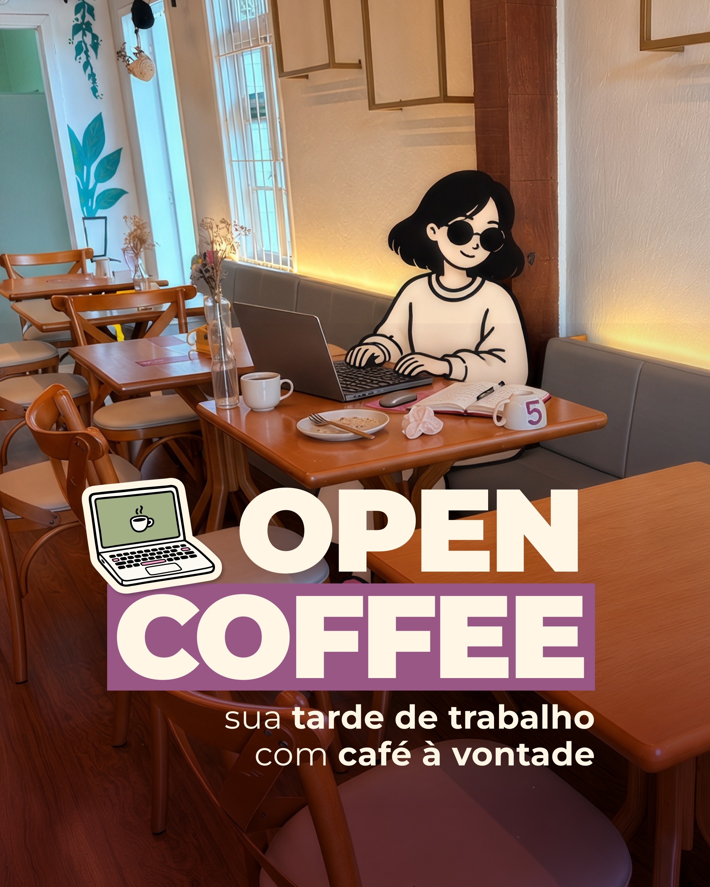
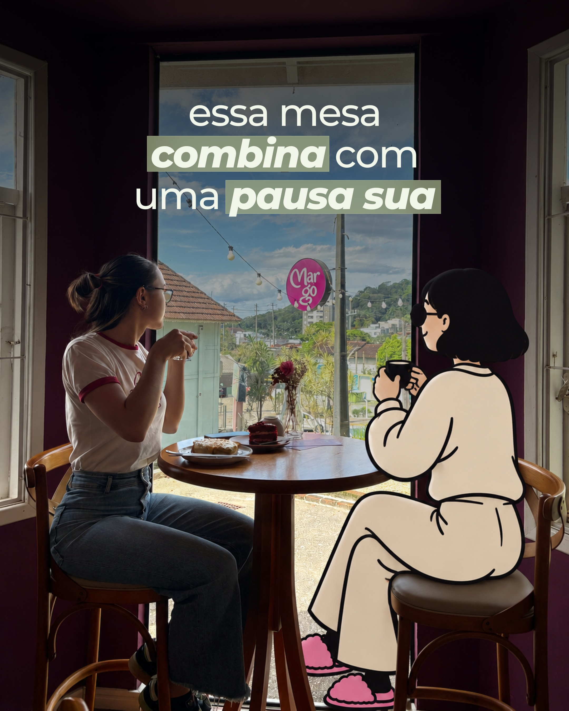

Outubro aponta para uma direção: tornar concreto o que a pessoa pode fazer, provar ou viver na Margô.
| Repetir | Ajustar | Testar antes de virar regra |
|---|---|---|
| Propostas como Open Coffee e oficina: para quem é, o que acontece e como participar. | O Reel de date: situação mais específica e uma ação que dê motivo para enviar. | Carrossel versus Reel em assuntos semelhantes. |
| Cantinhos com pessoa, pedido e uma experiência reconhecível. | A curiosidade sazonal quando gera perguntas sobre quando e como viver a experiência. | Hashtags com e sem; personagem; extensão da legenda. |
| Produto em ação e quem faz contando um detalhe real. | Histórias de inauguração para cenas do cotidiano atual. | Repetição do sinal de Halloween após mais circulação. |
Um convite pode ser enviado para organizar um passeio. Uma mesinha pode despertar vontade de conhecer o perfil. Uma história pode aproximar pessoas. Essas respostas são diferentes e pedem conteúdos diferentes.
Os números aparecem apenas como evidência dos casos. A planilha continua disponível para consulta e atualização.
Programação, Open Coffee e oficina transformam uma ideia em um plano possível. Mesinha mostra que o formato também comporta experiência.
Repetir: capa que chama → sequência que acrescenta contexto → serviço ou ação no fim. Para ofertas, separar convite e condições; para lugar, mostrar cantinho, pedido e experiência.
É uma boa aposta editorial para essa função. Não prova que o mesmo assunto renderia menos em vídeo nem define quantidade ideal de lâminas.
A fachada com movimento na abertura e “Joinville, é hoje” levaram pessoas ao perfil. Ambos têm contexto excepcional de inauguração e coautoria visível.
Repetir: cenas reais reconhecíveis e mensagens que cabem em uma peça. Não substituir toda fotografia por arte de divulgação.
A média desses quatro posts é influenciada pelos dois da abertura. Ela não demonstra superioridade da foto nem permite julgar Halloween com o mesmo tempo de circulação.
Affogato, choux, depoimentos e date responderam de formas diferentes. Produto em ação, descoberta e narrativa pessoal não são a mesma proposta.
Repetir: preparo, transformação, reação ou uma fala específica. O Reel deve entregar algo que a imagem parada não entrega.
Sem retenção validada e reprodução integral nesta revisão, não há diagnóstico comprovado de duração, áudio, ritmo ou segundo de abandono.

A capa mostra o trabalho acontecendo na casa e explica a promessa. A legenda informa condições e tira dúvidas.
Sinal observado: 58 compartilhamentos e 12 salvamentos. É um candidato a repetição para circulação e consulta.
Receita: situação identificável → proposta → condições → próximo passo.
Próxima aplicação: uma tarde real de Open Coffee, sem repetir apenas o anúncio.
Não sabemos quanto do resultado veio do carrossel, da novidade, do benefício ou das hashtags. Adesões precisam ser verificadas com a equipe.
Abrir publicação ↗
Vista, pessoa, pedido e personagem tornam a pausa imaginável. Há um lugar e uma situação, além de uma frase sobre a marca.
Sinal observado: 40 visitas ao perfil e elogio espontâneo à ideia da personagem.
Receita: lugar reconhecível → pessoa/pedido → experiência possível.
Próxima aplicação: outro cantinho para leitura, encontro ou café sozinha.
Não existe comparação equivalente sem personagem. O comentário valida uma reação positiva, não prova ganho de alcance causado pela ilustração.
Abrir publicação ↗Affogato: produto reconhecível, ação de servir e uma legenda curta sobre a combinação. Circulou mais que date e choux nesta coleta.
Choux: uma descoberta apresentada pela Bruna, com comentários sobre sabores e vontade de provar. O interesse apareceu mesmo sem salvamentos.
Aplicação: Red Velvet como preparo/textura; favoritos como indicação de quem faz, com motivos pessoais. Um produto e um detalhe concreto por peça.
A ação inicial e a duração ideais continuam sendo testes. Não afirmar que explicação ou vídeo curto são sempre melhores.
Teve a menor circulação entre os Reels coletados e poucos compartilhamentos. A legenda já pedia envio para a companhia: o CTA sozinho não bastou.
Teste: uma situação identificável — escolher o pedido, provar do prato do outro ou uma reação real — em vez de apenas repetir o conceito de “date sem pressa”.
É proposta de nova execução, não diagnóstico de um defeito comprovado do vídeo. Uma peça não demonstra desinteresse do público por casais.
Depoimentos e história receberam comentários de carinho, parceria e vontade de conhecer. Manter pessoas reais, agora ligadas à rotina da casa.
Aplicação: quem escolhe o favorito, por que uma receita existe ou uma decisão de bastidor. Reduzir agradecimentos repetidos à inauguração é uma decisão de fase, não prova de saturação medida.
A foto de curiosidade gerou perguntas sobre quando e qual bebida. O Reel recente tem sinal de compartilhamento, mas precisa amadurecer.
Aplicação futura: surpresa visual ligada a produto real; informação de serviço quando necessária; uma ação simples para participar. Não declarar vitória do formato ou da promoção neste corte.
Nas 17 legendas ligadas a métricas, cinco têm hashtags visíveis e 12 não. As cinco com hashtags são também as mais novas, de 25–30/10, e concentram ofertas e Halloween.
Sabemos: programação e mesinha tiveram boa resposta sem hashtags na legenda.
Não sabemos: qual alcance adicional as hashtags trouxeram. A comparação mistura idade, tema e formato; comentários com hashtags não foram auditados.
Decisão: manter um padrão pertinente provisório e testar conteúdos semelhantes antes de criar uma regra.
| Estrutura | Aplicação possível | O que observar |
|---|---|---|
| Um motivo para ir | Uso real de Open Coffee ou encontro confirmado | Compartilhamentos, consulta e procura verificada |
| Um cantinho em uso | Leitura, pausa ou encontro, com pedido real | Visitas ao perfil, salvamentos e identificação |
| Um produto, uma descoberta | Red Velvet, bebida ou favorito apresentado por quem escolheu | Desejo nos comentários e compartilhamento; retenção quando disponível |
Não executar todos os testes juntos nem publicar apenas para preencher a amostra. São propostas de aprendizado, não calendário aprovado. Manter a frequência compatível com a captação e a operação.
Repertório de outubro para consultar antes de definir pautas e captação. Prioridades de uso; não é um calendário aprovado.
Estrutura: Capa com motivo para ir → experiência/benefício → condições e como participar. Quantidade de lâminas conforme a informação.
Captar: Foto da experiência ou atividade; serviço confirmado; pessoa/produto/casa coerentes com a proposta.
Aplicação: Open Coffee em uso ou próximo encontro confirmado.
Base: Open Coffee, oficina e programação: sinais de compartilhamento e consulta.
Estrutura: Cantinho reconhecível → pedido/detalhes → pessoa vivendo a pausa. Personagem quando fizer sentido.
Captar: Plano aberto do lugar; pedido; pessoa em ação; detalhe da vista ou da mesa.
Aplicação: Uma pausa sozinha, leitura ou encontro em outro cantinho.
Base: Mesinha da janela: consulta ao perfil e reação positiva à personagem.
Estrutura: Produto/ação → detalhe concreto de sabor ou feitura → resultado e convite. Fala de quem faz quando acrescentar algo.
Captar: Produto pronto; etapa visual do preparo; detalhe de textura; fala curta e específica se necessária.
Aplicação: Red Velvet sendo finalizado ou uma bebida disponível no dia.
Base: Affogato e choux: funções de desejo visual e descoberta com autoria.
Estrutura: Pessoa e favorito → itens escolhidos e motivos reais → pedido na mesa e convite.
Captar: Retrato com pedido; detalhes dos itens; motivos ditos pela pessoa; disponibilidade confirmada.
Aplicação: Favoritos da Bruna, do Marcos ou da Suelen, sem datas ainda.
Base: Proposta nova derivada dos sinais de produto, pessoas e experiência; ainda não foi testada como série.
Estrutura: Foto reconhecível da casa e das pessoas + legenda que dá contexto ou motivo atual para visitar.
Captar: Cena espontânea, luz e lugar identificáveis; pessoas quando houver autorização.
Aplicação: Um encontro acontecendo ou um momento de café no salão.
Base: Fachada/movimento na abertura: resposta positiva com contexto excepcional e colaboração.
Estrutura: Ação reconhecível → pedido compartilhado/reação → convite coerente.
Captar: Escolha do pedido; um provando do outro; reação real; detalhes da mesa.
Aplicação: A negociação da última garfada ou um pedido escolhido em dupla.
Base: Date teve resposta menor na amostra; não repetir a mesma solução sem ajuste.